In New York since 1947
Membership for 2021!
IMAGE GALLERY
Copyright notice: permissions required.
Photo slide-show: TBA (Site under construction)
| 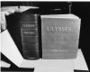 |
Ulysses
The first edition, published by Shakespeare & Company in Paris in 1922. © (Courtesy of Philip Lyman, Gotham Book Mart.) > To enlarge, click thumbnail. To return, click main window |
| > |
Two Portraits (computer drawings) of James Joyce by Carl Arrington
© (Collection of A. Nicholas Fargnoli) > To enlarge, click thumbnail. To return, click main window |
| > 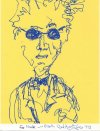 |
Two Portraits (computer drawings) of James Joyce by Carl Arrington
© (Collection of A. Nicholas Fargnoli) > To enlarge, click thumbnail. To return, click main window |
| > 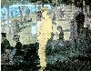 |
"Joyce in the Park," by Ciceil and Murray Gross after Georges Seurat
© (Courtesy of Ciceil and Murray Gross) > To enlarge, click thumbnail. To return, click main window |
| > 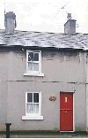 |
Nora Barnacle's House in Galway
© (Courtesy of Giuliana and Joshua Chapman) > To enlarge, click thumbnail. To return, click main window |
| > 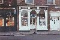 |
In chapter 5 (the Lotus-Eaters episode) of Ulysses, Leopold Bloom buys a cake of lemon soap at F.W. Sweny, Chemist. Bloom planned to return later in the day to pick up a refill of Molly's face lotion, but forgot to do so.
© (Photo courtesy of Lucretia Joyce Lyons)
> To enlarge, click thumbnail. To return, click main window |
| > 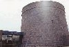 |
Joyce Museum, Dublin.
© (Photo Courtesy of Lucretia Joyce Lyons) > To enlarge, click thumbnail. To return, click main window |
| > 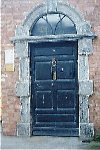 |
7, Eccles Street, Leopold Bloom's residence; the door is now at the James Joyce Centre, 35 North Great George's Street, Dublin.
© (Photo courtesy of Lucretia Joyce Lyons) > To enlarge, click thumbnail. To return, click main window |
| > 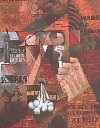 |
Paul Joyce: the Aeolus episode, Chap. 7;
© (Courtesy of Paul Joyce) > To enlarge, click thumbnail. To return, click main window |
| > 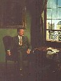 |
Paul Joyce: a portrait of Joyce;
© (Courtesy of Paul Joyce) > To enlarge, click thumbnail. To return, click main window |
| > 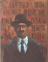 |
Paul Joyce: Calypso episode, Chap. 4;
© (Courtesy of Paul Joyce) > To enlarge, click thumbnail. To return, click main window |
| > 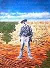 |
Paul Joyce: the Proteus episode, Chap. 3;
© (Courtesy of Paul Joyce) > To enlarge, click thumbnail. To return, click main window |
Image Gallery
Please be sure to obtain written permission from The James Joyce Society before copying, downloading, or linking to these copyrighted images.
| Home | Programs | History | Membership | Archive | Links | Events | Help |
File format rev. 4 May 2002, 14 Nov 2003 (Ver. 1.6)